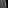
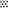
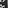
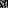
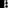
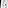
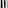
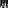
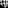
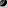

MNIST 순차: 방향을 별도 속성으로 적용
V3의 multi-part 표현 20개는 모두 검정 관찰창 carrier를 포함했고, 이를 빼면 part가 하나씩 남았다. V4는 multi-part 34개이며 창 접촉 concept을 빼도 30개가 남는다. 거의 어두운 창 concept까지 빼면 29개다. 밝은 획과 방향을 나눈 예는 실제 픽셀과도 맞는다.
PAP / CONCEPT V4 / 2026.10.26
Luna에서 입력 설명만 바꿔 V3와 같은 12회를 다시 실행했다. 일부 concept 조합은 달라졌지만, 픽셀을 잘못 읽는 문제까지 해결되지는 않았다.
MNIST와 Fashion-MNIST 각각 원본 210장, 관찰 1,050개. 같은 PNG bytes와 순서로 1,050개 한 번과 210개씩 다섯 번을 실행했다. 원본 28×28, 보이는 창 8×8, 창 밖 값 128을 유지했다. CORE·schema·누적 catalog 규칙·model·effort·timeout도 그대로다. 각 조건은 빈 catalog로 시작했고 순차에서는 V4 자신의 이전 정의와 review notes만 받았다.
각 이미지는 28×28 grayscale 원본에서 8×8 영역만 보이게 하고 나머지를 가린 이미지다. 창 안의 픽셀은 원본 값을 그대로 유지하며, 창 밖은 원본 내용과 관계없이 모두 회색(픽셀 값 128)으로 덮었다. 창 밖의 회색과 관찰창의 사각형 경계는 가림 처리로 생긴 것이므로, 원본의 배경이나 물체 모양으로 해석하지 마라. 창 안에도 실제 값이 128인 픽셀이 있을 수 있으므로, 회색이라는 이유만으로 가려진 영역이라고 판단하지 마라.
You are an agent that discovers reusable visual concepts from observations. Compare recurring structures and the features that vary across observations. Define each concept around one independently reusable visual factor. Separate a shared structure from attributes that can vary while that structure remains recognizable. Reuse the same attribute concept across different compatible structures when the observations support it. Check each proposed definition by asking: if one feature changed while the others stayed the same, which concept should change and which concepts should remain reusable? Use this question to examine definitions, not as evidence that an unseen variant exists. Record uncertain separations in review_notes. Express varied observations through combinations of a compact set of concepts while preserving meaningful visual distinctions. Do not split a factor into fragments that have no clear independent visual meaning. Output concept definitions separately from expressions that combine those concepts. Do not register a new concept merely because a structure appears with a particular combination of attributes. For each concept, provide a name, a short definition, every patch number actually used as evidence, and a description of what is visibly present in each cited patch. State what the concept defines and which other features are outside its definition. For each compositional expression, provide its supporting patch number, the concepts used, their roles, and their relationships. Explicitly state which part each attribute describes and which parts each relationship connects. Input and output format: Each image is a 28x28 grayscale original with only an 8x8 region left visible and the rest masked out. Pixels inside the window retain their original values; outside the window, all pixels are replaced with gray (pixel value 128), regardless of the original content. The gray exterior and the rectangular window boundary are artifacts of masking, so do not interpret them as the original image background or object shape. Pixels inside the window may genuinely have value 128, so do not identify a region as masked merely because it is gray. No separate mask, coordinates, source identities, or class labels are supplied. Describe visible evidence; do not assume hidden continuations. Return English JSON with new_concepts, expressions, and review_notes. Each new concept has id, name, definition, composition, and examples. Use review_notes for unresolved overlap or proposed revisions to earlier concepts, or an empty array. composition contains parts (each with a unique role and concept_id) and combination (a short explanation of how those parts combine). Referenced IDs must exist in this response or the prior catalog. For an atomic concept use empty parts and an empty combination. Do not create circular references. Prefer one reusable factor per definition. A named composite is appropriate only when observed examples support a recurring arrangement whose defining content is the relationship among parts. State that relationship and reference its constituent concepts. Do not create a named composite solely to attach particular attribute values to a structure. Do not split a factor further when the proposed fragments have no clear independent visual meaning. There is no fixed concept-count cap or predefined list of primitives. examples contains every current patch actually used as evidence, each with batch, patch, and observation. observation must describe what is visibly present, not just give a filename. A patch can support multiple concepts. This is discovery evidence, not full labeling of all patches against all concepts. Uncited patches are unassessed. Do not relabel the prior catalog. expressions contains illustrative uses of the discovered concepts on current patches. Each expression has batch, patch, observation, parts, and combination, with no new concept ID or name. Use one or more parts, each with a unique nonempty role and a concept_id from this response or the prior catalog. The same concept can appear in different roles. Describe the visible observation and how the parts relate in combination. Expressions may reuse existing concepts without proposing any new concept. Do not enumerate every patch-concept match. Expressions are archived separately and do not become definitions or historical catalog context. Identify distinct part instances by role. In combination, explicitly state which role each attribute applies to and which roles each relationship connects; reusing one concept for multiple instances does not make those instances the same part.
별도 concept 금지 목록이나 끝점 규칙은 넣지 않았다. 창 밖을 관찰하지 않았다는 설명이 실제 image perception을 교정하는지 보는 재실행이다.
| 조건 | 정의 V3 → V4 | 표현 V3 → V4 | part ≥ 2 V3 → V4 | 인용한 관찰 V3 → V4 |
|---|---|---|---|---|
| MNIST · 한 번 | 10 → 8 | 10 → 10 | 9 → 1 | 31 → 30 |
| MNIST · 순차 | 12 → 14 | 32 → 44 | 20 → 34 | 82 → 76 |
| Fashion-MNIST · 한 번 | 12 → 10 | 14 → 7 | 11 → 7 | 73 → 55 |
| Fashion-MNIST · 순차 | 19 → 8 | 40 → 91 | 34 → 9 | 112 → 139 |
합계는 정의 53 → 40, 표현 96 → 152다. 표의 part 수는 role 참조 수이며, 서로 독립된 의미 요소를 정확히 조합했다는 점수는 아니다.
V3의 multi-part 표현 20개는 모두 검정 관찰창 carrier를 포함했고, 이를 빼면 part가 하나씩 남았다. V4는 multi-part 34개이며 창 접촉 concept을 빼도 30개가 남는다. 거의 어두운 창 concept까지 빼면 29개다. 밝은 획과 방향을 나눈 예는 실제 픽셀과도 맞는다.
B1에서 만든 8개 정의를 B5까지 유지했다. 마지막 B5의 표현 53개는 전부 단일 part다. 전체 표현 증가분 56개 중 35개는 이 B5 증가에서 나온다. 단일 concept을 더 많이 인용한 현상과 compositionality를 구분해야 한다.
분리되지 않은 요소도 있다. MNIST 순차는 밝은/어두운 획·채워진 영역·고리를 별도 concept으로 만들었고 방향 정의도 밝은 mark에 묶여 있다. B4에서 그 방향을 어두운 획에 적용한 것은 정의와 사용 범위가 맞지 않는다. Fashion 한 번 조건은 선·명암·방향을 비교적 명확히 나눴지만, 그 조합의 실제 근거가 틀릴 수 있다.
각 정의의 첫 근거와 모든 표현을 직접 대조했다. V4는 192개 설명, 서로 다른 관찰 155개·원본 129장이다. V3도 같은 선택 규칙이지만 선택된 입력은 다르다. 독립적인 human GT 평가나 전체 labeling이 아니다.
| 버전 · 선택된 설명 | 픽셀과 일치 | 명확한 불일치 | 판단 보류 |
|---|---|---|---|
| V3 · 149개 | 82 · 55.0% | 31 · 20.8% | 36 · 24.2% |
| V4 · 192개 | 104 · 54.2% | 43 · 22.4% | 45 · 23.4% |
| V4 기록 | 전체 | 일치 | 불일치 | 보류 |
|---|---|---|---|---|
| 정의의 첫 근거 | 40 | 17 | 16 | 7 |
| 모든 관찰 표현 | 152 | 87 | 27 | 38 |
명확한 오류 비율은 V3 20.8%, V4 22.4%였다. 서로 다른 표본이며 같은 이미지의 설명이 중복되므로 정확도 하락이나 prompt의 인과적 효과로 해석할 수 없다. 적어도 오류가 전반적으로 해결됐다는 증거는 없다.
Light stroke fragment + Vertical stroke orientation
A compact bright mark is mainly vertical.
The orientation attribute B1_C003 describes the light-stroke instance B1_C001.
The orientation attribute B1_C003 describes the light-stroke instance B1_C001.
orientation,compositionVertical linear mark
A thin bright upright bar appears along the left side of the dark visible region.
A narrow, elongated contrast run oriented mainly vertically inside the visible window. It defines local orientation and linearity, not position, exact length, brightness polarity, thickness variation, or hidden continuation.
locationSmall loop or ring
A tiny pale oval-like ring encloses a dark center.
A compact contrasting contour that visibly encloses a darker center or forms a near-closed loop. It excludes open arcs without enclosure, exact loop shape, position, polarity, and unseen continuation.
closure
Dark loop-like enclosure
A small dark rounded contour encloses a lighter interior.
A visibly dark curved path that surrounds or nearly surrounds a lighter interior area. It defines local enclosure by a dark contour, but not the precise loop size, orientation, thickness, degree of completion, or hidden continuation.
polarity,closure
Linear stroke fragment + Linear stroke fragment + Linear stroke fragment + Dark-valued mark + Horizontal orientation + Parallel-stroke bundle
Three short dark horizontal lines form a closely spaced bundle.
A_C002 applies to all three lines, A_C004 applies to all three lines, and A_C009 connects the three distinct line instances as a parallel bundle.
A_C002 applies to all three lines, A_C004 applies to all three lines, and A_C009 connects the three distinct line instances as a parallel bundle.
near_blank,count,parallelismDark filled fragment
The visible window contains a compact solid-looking dark square region.
The dark_mass role describes the contiguous filled-looking region.
The dark_mass role describes the contiguous filled-looking region.
mask_artifact,filled_regionmask_artifact: 보이는 모양이 창의 사각 외곽에 의존하는 기록이다. V3 36/149, V4 29/192였다. 검정 픽셀 자체를 맞게 설명했어도 그 사각형이 원본 물체 모양이라는 근거는 없다. 이 flag와 픽셀 설명 오류는 별개다.
window_relation: 창 가장자리에 mark가 닿는다는 명시적 관계다. V4는 정의 하나와 표현 일곱 개에 나타났다. 원본 도형의 속성과는 다르지만, 접촉을 기술했다는 이유만으로 perception 오류나 지시 위반으로 판정하지 않았다. 두 flag는 겹칠 수 있다.
V4의 Predominantly dark field는 관찰 픽셀만 묘사하며 배경이나 물체인지 추론하지 않는다고 명시했다. 따라서 이 정의가 있다는 사실만으로 mask 오해로 분류하지 않았다.
V3 R006 A bright local run appears to stop inside the visible window.
V4 V043 A pale diagonal slash crosses the visible dark region.
V3 R012 A narrow light vertical strip appears along the left side of the dark content.
V4 V014 The bright mark bends into a small arc on the right side.
V3 R024 A narrow vertical contrast stripe at the left side of the visible window.
V4 V097 A small oblique light-and-dark stroke fragment is visible.
V3 R073 A compact pair of light strokes crosses inside the dark content.
V4 V069 Several bright segments meet in a compact joined region.
V3에서 불일치였던 설명 31개를 같은 조건·같은 입력으로 추적했다. V4가 다시 인용한 것은 9개 기록에 해당하며, 22개 기록의 입력은 다시 인용하지 않았다. 인용하지 않았다는 사실은 교정됐다는 뜻이 아니다. 다시 인용된 기록도 맞는 설명·남은 오류·보류가 섞여 있다. 첫 근거 밖의 재인용 하나는 이번 감사 범위에 포함되지 않는다.
| 조건 | 인용 근거 중 입력 앞 10%의 비중 V3 → V4 |
|---|---|
| MNIST · 한 번 | 71.0% → 83.3% |
| MNIST · 순차 | 9.8% → 17.1% |
| Fashion-MNIST · 한 번 | 46.6% → 96.4% |
| Fashion-MNIST · 순차 | 20.5% → 21.6% |
한 번 조건의 앞 10%는 #1–105, 순차 조건은 각 batch의 #1–21이다. 분모는 해당 조건에서 실제 인용한 서로 다른 관찰이며 전체 입력 수가 아니다. 한 번 조건은 V4에서 MNIST 83%, Fashion 96%가 앞 10%에 몰렸다. 순차는 17%, 22%였다. 선택한 근거의 위치를 보여주며 내부 attention이나 모든 입력을 읽었는지는 측정하지 않았다.
| 조건 | 인용 없는 관찰 | 그중 모두 검정 | 명암 차이가 있는 미인용 관찰 | 5개 관찰 모두 인용 없는 원본 |
|---|---|---|---|---|
| MNIST · 한 번 | 1020 | 5 | 1015 | 181 |
| MNIST · 순차 | 974 | 3 | 971 | 141 |
| Fashion-MNIST · 한 번 | 995 | 12 | 983 | 158 |
| Fashion-MNIST · 순차 | 911 | 11 | 900 | 109 |
각 조건의 입력은 관찰 1,050개·원본 210장이다. 미인용 대부분은 픽셀이 모두 같은 빈 창이 아니다. 뚜렷한 명암 경계나 획이 있는 창도 인용하지 않았다. 이 작업은 대표 근거를 선택하는 discovery이므로, 인용되지 않은 이유가 중복·선택 편향·응답 길이·perception 실패 중 무엇인지는 출력만으로 분리할 수 없다.
픽셀 범위 0–0. 정의·표현 인용 없음.
픽셀 범위 0–255. 정의·표현 인용 없음.
픽셀 범위 0–0. 정의·표현 인용 없음.
픽셀 범위 0–252. 정의·표현 인용 없음.
픽셀 범위 0–204. 정의·표현 인용 없음.
픽셀 범위 0–255. 정의·표현 인용 없음.
픽셀 범위 0–0. 정의·표현 인용 없음.
픽셀 범위 0–254. 정의·표현 인용 없음.
픽셀 범위 146–255. 정의·표현 인용 없음.
픽셀 범위 0–254. 정의·표현 인용 없음.
픽셀 범위 0–125. 정의·표현 인용 없음.
픽셀 범위 0–253. 정의·표현 인용 없음.
픽셀 범위 0–0. 정의·표현 인용 없음.
픽셀 범위 0–255. 정의·표현 인용 없음.
픽셀 범위 0–0. 정의·표현 인용 없음.
픽셀 범위 0–255. 정의·표현 인용 없음.
픽셀 범위 0–0. 정의·표현 인용 없음.
픽셀 범위 0–255. 정의·표현 인용 없음.
픽셀 범위 0–0. 정의·표현 인용 없음.
픽셀 범위 0–255. 정의·표현 인용 없음.
픽셀 범위 0–0. 정의·표현 인용 없음.
픽셀 범위 0–255. 정의·표현 인용 없음.
픽셀 범위 0–0. 정의·표현 인용 없음.
픽셀 범위 0–253. 정의·표현 인용 없음.
일치 여부는 영어 claim과 조합 설명을 함께 대조한 판단이다. 정의 전체의 모든 근거를 검증한 결과가 아니다. 각 카드의 한국어는 검토 이유이며 작은 영어는 Luna 원문이다.
Vertical linear mark
A thin bright upright bar appears along the left side of the dark visible region.
A narrow, elongated contrast run oriented mainly vertically inside the visible window. It defines local orientation and linearity, not position, exact length, brightness polarity, thickness variation, or hidden continuation.
locationHorizontal linear mark
A short pale horizontal segment is visible near the lower-left of the window.
A narrow, elongated contrast run oriented mainly horizontally inside the visible window. It excludes diagonal orientation, exact position, brightness polarity, and hidden continuation.
locationOblique linear mark
A clean pale diagonal slash rises across the dark visible region.
A narrow contrast run with a clearly diagonal or slanted orientation. It defines obliqueness and linearity, not position, exact slope, brightness polarity, or hidden continuation.
orientationCurved arc or hook
A small pale rounded arch appears near the center.
A visibly curved contrast mark forming part of an arc, rounded bend, or hook. It excludes straight angular corners, exact curvature, position, polarity, and hidden continuation.
curvatureAngular bend or corner
A short upright contrasting mark ends in a small angled foot.
Two or more contrasting runs meet with a visibly angular turn, corner, or kink. It excludes smooth curvature, exact angle, position, polarity, and hidden continuation.
angle,curvatureSmall loop or ring
A tiny pale oval-like ring encloses a dark center.
A compact contrasting contour that visibly encloses a darker center or forms a near-closed loop. It excludes open arcs without enclosure, exact loop shape, position, polarity, and unseen continuation.
closureStroke junction
Two short contrasting runs meet in a small crossing-like mark.
A compact location where multiple contrasting runs meet or cross, producing an X-, T-, Y-, or plus-like junction. It excludes merely adjacent parallel runs and does not define the branch angles or polarity.
junction,countCompact filled block
A solid dark square-like region occupies most of the visible window.
A contiguous compact region occupying several neighboring pixels without a clearly dominant thin-stroke direction. It defines local filledness, not whether the region is light or dark, exact size, position, or hidden continuation.
mask_artifact,filled_regionLight stroke fragment
A small bright upright mark appears near the center of the dark visible area.
A compact connected group of light pixels forming a stroke-like mark inside the visible window. It defines the foreground mark itself, but not its orientation, curvature, branching, thickness, intensity, or continuation beyond the window.
orientationPredominantly dark field
The visible square is nearly uniformly black.
A visible window whose pixels are almost entirely dark, with no substantial light stroke present. It describes the observed pixel field only and does not infer whether it is background or a filled object.
polarity,uniformityVertical stroke orientation
The bright fragment is taller than it is wide and runs mainly vertically.
A local light mark whose dominant extent is vertical. This defines directional orientation only; the mark may be straight, curved, thick, thin, or connected to other marks.
orientationHorizontal stroke orientation
The light fragment extends mainly from left to right.
A local light mark whose dominant extent is horizontal. This defines directional orientation only and excludes its exact shape, thickness, and endpoint form.
orientationDiagonal stroke orientation
A bright slanted segment crosses the visible area.
A local light mark whose dominant axis is oblique rather than vertical or horizontal. It defines slanted direction only and excludes whether the mark is straight, curved, or part of a junction.
orientation,connectivityCurved stroke trajectory
The bright mark bends into a small arc on the right side.
A light stroke following a visibly bent or arc-like path rather than a single straight axis. It defines curvature of the visible path, not enclosure, branching, or the hidden continuation outside the window.
curvatureAngular bend
The bright mark includes a short bar joined to a differently oriented segment.
A visible light mark that changes direction through a distinct corner or kink. It defines a two-segment or sharply turning relationship, excluding smooth curvature and multi-arm junctions.
bend,crop_boundaryMulti-arm junction
Several light segments appear to meet in a compact central region.
A visible point or compact region where at least two light stroke arms meet or overlap. It defines the branching or crossing relationship, not the arms' individual orientations or brightness.
junction,countLoop-like enclosure
A small rounded light contour encloses a dark center.
A light curved path that visibly surrounds or nearly surrounds a darker interior area. It defines local enclosure, including incomplete loop-like contours, but not the precise loop size, orientation, or stroke thickness.
closureDark stroke fragment
A short dark horizontal stroke-like fragment is visible near the center of the window.
A compact connected group of visibly dark pixels forming a narrow or path-like mark within the retained window. It defines the dark mark's presence and stroke-like character, but not its orientation, curvature, branching, thickness, or continuation outside the window.
shape,locationDark filled fragment
A nearly solid dark rectangular patch occupies part of the visible window.
A compact contiguous dark region with substantial area, appearing more block-like or filled than stroke-like within the retained window. It defines the local filled dark mass, but not its exact size, position, boundary shape, or hidden continuation.
mask_artifact,filled_regionLight filled fragment
A compact bright horizontal block occupies part of the visible window.
A compact contiguous region of visibly light pixels with substantial area, appearing block-like or filled rather than primarily path-like. It defines the local light mass, but not its exact size, position, boundary shape, intensity, or continuation beyond the visible window.
mask_artifact,filled_regionDark loop-like enclosure
A small dark rounded contour encloses a lighter interior.
A visibly dark curved path that surrounds or nearly surrounds a lighter interior area. It defines local enclosure by a dark contour, but not the precise loop size, orientation, thickness, degree of completion, or hidden continuation.
polarity,closureVisible-window edge contact
A narrow dark mark visibly reaches the left edge of the retained window.
A visible light or dark mark whose pixels meet an edge of the retained 8x8 window. It defines boundary contact only, not polarity, orientation, thickness, topology, or any continuation beyond the masked window.
shape,window_relationLinear stroke fragment
Two short elongated marks are visible near the upper part of the window.
A narrow elongated contiguous mark visible inside the 8x8 window. It defines line-like geometry, while orientation, polarity, thickness, position, length, and whether other marks are attached remain separate.
texture,orientationDark-valued mark
The two visible short bars are dark-valued.
A visible mark whose pixels are distinctly darker than the neutral gray level inside the window. It defines tonal polarity only, not the mark's shape, orientation, size, or count.
polarityLight-valued mark
A narrow light upright mark is visible at one side of the window.
A visible mark whose pixels are distinctly lighter than the neutral gray level inside the window. It defines tonal polarity only, not the mark's shape, orientation, size, or count.
orientationHorizontal orientation
The visible bars run approximately left to right.
The principal direction of an elongated visible mark is approximately horizontal. It defines orientation, while tonal polarity, thickness, length, and the number of marks remain outside the definition.
orientationVertical orientation
A narrow dark mark runs vertically.
The principal direction of an elongated visible mark is approximately vertical. It defines orientation, while tonal polarity, thickness, length, and the number of marks remain outside the definition.
orientationDiagonal orientation
A small oblique fragment is visible.
The principal direction of an elongated visible mark is oblique rather than horizontal or vertical. It defines slanted orientation, while tonal polarity, curvature, thickness, and length remain separate.
orientationCurved or rounded stroke
A small bent or curved fragment is visible.
A visible mark with a bend, arc, hook, loop, or rounded termination rather than a purely straight segment. It defines curvature, not polarity, exact radius, size, or attachment.
curvatureCompact filled region
A pale compact block with internal texture is visible.
A small contiguous region with substantial width and height and relatively little internal separation, appearing block-like rather than line-like. Exact tone, position, and boundary shape are outside the definition.
mask_artifact,filled_region,textureParallel-stroke bundle
Two dark horizontal bars appear as a closely spaced parallel pair.
A recurring arrangement of at least two separate linear stroke fragments with similar direction and a small gap between them. The defining factor is the parallel relationship, not a particular polarity or orientation.
parallelism,textureCrossed or clustered stroke texture
A compact dark textured mark contains several tightly packed directions.
A compact group of multiple short marks with differing directions, crossings, or tightly interleaved pixels, without a single dominant filled block. The grouping relationship is essential; exact polarity and stroke count are not.
texture,polarityVertical stroke
A short narrow light-and-dark mark runs mainly vertically near the left side of the visible window.
A narrow contrast-bearing mark whose visible major axis is predominantly vertical within the 8×8 window. It defines vertical orientation and stroke-like continuity; tone polarity, exact width, intensity, bends, parallel repetition, loops, and continuation outside the window are outside its definition.
locationHorizontal stroke
A short nearly horizontal dark mark is visible in the small window.
A narrow contrast-bearing mark whose visible major axis is predominantly horizontal within the 8×8 window. It defines horizontal orientation and stroke-like continuity; tone polarity, exact width, intensity, bends, parallel repetition, loops, and continuation outside the window are outside its definition.
orientationDiagonal stroke
A small oblique contrast mark slopes across the visible window.
A narrow contrast-bearing mark whose visible major axis is oblique rather than predominantly vertical or horizontal. It defines diagonal orientation and stroke-like continuity; exact slope, tone, width, curvature, crossings, and continuation outside the window are outside its definition.
orientationAngular turn or junction
A vertical mark meets a short adjoining segment, forming a small angular corner.
A visible stroke geometry in which a segment changes direction or two segments meet, producing an L-, V-, or T-like corner. It defines the angular relationship among segments; exact orientations, tone, thickness, number of branches, and hidden continuation are outside its definition.
angleRounded or loop-like mark
A tiny outlined rounded or loop-like mark is visible.
A visibly curved arc or small loop/ring-like enclosure in the retained window. It defines rounded curvature or enclosure; exact closure, tone polarity, thickness, size, and continuation beyond the window are outside its definition.
closure,textureParallel-band group
Two short nearly parallel horizontal bands are visible.
Two or more nearby contrast-bearing bands with approximately parallel local orientation. It defines multiplicity and parallel spacing; the individual band orientation, tone polarity, exact count, thickness, and whether the bands continue outside the window are outside its definition.
parallelism,orientationCompact filled or textured patch
A small pale checker-like square cluster is visible.
A dense, compact roughly block-like cluster of contrasting pixels without a clearly dominant single stroke, bend, or loop. It defines local density and compact extent; tone polarity, exact texture, internal microstructure, and hidden shape outside the window are outside its definition.
texture,mask_artifactCrossing strokes
Two oblique marks visibly intersect in a small cross-like arrangement.
Two visible stroke segments intersect or overlap, producing a clear crossing or cross-like junction. It defines the intersection relationship; stroke orientation, tone, thickness, number of crossings, and hidden continuation are outside its definition.
junction,countVertical linear mark + Angular bend or corner
The visible mark is an upright segment ending in an angular foot.
A_C001 describes the upright segment; A_C005 describes the change of direction at its termination, and the two roles connect at the visible corner.
A_C001 describes the upright segment; A_C005 describes the change of direction at its termination, and the two roles connect at the visible corner.
angle,endpointVertical linear mark
A mostly vertical bright bar appears in the dark window.
The single role describes the visible vertical linearity.
The single role describes the visible vertical linearity.
orientationOblique linear mark
A pale diagonal slash crosses the visible dark region.
The single role describes the oblique linear segment.
The single role describes the oblique linear segment.
orientationHorizontal linear mark
A short pale horizontal segment is visible near the lower-left.
The single role describes the horizontal linearity.
The single role describes the horizontal linearity.
locationCurved arc or hook
A small rounded pale arch appears near the center.
The single role describes the visible smooth curvature.
The single role describes the visible smooth curvature.
curvatureSmall loop or ring
A tiny pale loop encloses a dark center.
A_C006 describes the near-closed contour and its enclosed center.
A_C006 describes the near-closed contour and its enclosed center.
closureStroke junction
A compact crossing-like mark is visible.
The single role describes the meeting of multiple visible runs.
The single role describes the meeting of multiple visible runs.
junction,countCompact filled block
A solid dark square-like region fills much of the visible window.
The single role describes compact filledness without assigning semantic foreground or background.
The single role describes compact filledness without assigning semantic foreground or background.
mask_artifact,filled_regionStroke junction
A small cross-like intersection appears near the center.
The single role describes the visible stroke intersection.
The single role describes the visible stroke intersection.
junction,countCompact filled block
A compact light square block is visible.
A_C008 describes the compact filled region; its light polarity is an observed attribute, not a separate concept.
A_C008 describes the compact filled region; its light polarity is an observed attribute, not a separate concept.
mask_artifact,filled_regionLight stroke fragment + Vertical stroke orientation
A compact bright mark is mainly vertical.
The orientation attribute B1_C003 describes the light-stroke instance B1_C001.
The orientation attribute B1_C003 describes the light-stroke instance B1_C001.
orientation,compositionLight stroke fragment + Horizontal stroke orientation
A short bright bar runs mainly horizontally.
The horizontal orientation B1_C004 applies to the light-stroke instance B1_C001.
The horizontal orientation B1_C004 applies to the light-stroke instance B1_C001.
orientation,compositionLight stroke fragment + Diagonal stroke orientation
A narrow bright segment is slanted diagonally.
The diagonal orientation B1_C005 describes the light-stroke instance B1_C001.
The diagonal orientation B1_C005 describes the light-stroke instance B1_C001.
orientationLight stroke fragment + Curved stroke trajectory
A bright C-like arc appears in the visible window.
The curved trajectory B1_C006 describes the path of the light mark B1_C001.
The curved trajectory B1_C006 describes the path of the light mark B1_C001.
curvature,filled_regionLight stroke fragment + Angular bend
A light mark changes direction through a small corner.
The angular bend B1_C007 relates two differently oriented portions of the light mark B1_C001.
The angular bend B1_C007 relates two differently oriented portions of the light mark B1_C001.
angle,crop_boundaryLight stroke fragment + Multi-arm junction
A compact bright mark has multiple joined arms.
The junction relationship B1_C008 connects the visible arms within the light mark B1_C001.
The junction relationship B1_C008 connects the visible arms within the light mark B1_C001.
junction,countLight stroke fragment + Loop-like enclosure
A rounded light contour surrounds a small dark interior.
The enclosure property B1_C009 describes how the light mark B1_C001 surrounds the darker interior.
The enclosure property B1_C009 describes how the light mark B1_C001 surrounds the darker interior.
closurePredominantly dark field
The visible window is almost entirely black.
The visible pixels are represented by the predominantly dark field B1_C002.
The visible pixels are represented by the predominantly dark field B1_C002.
polarity,uniformityLight stroke fragment + Vertical stroke orientation
A thin upright bright segment is visible against a dark field.
B1_C003 specifies the vertical direction of the B1_C001 mark.
B1_C003 specifies the vertical direction of the B1_C001 mark.
orientation,shapeLight stroke fragment + Horizontal stroke orientation
A short bright horizontal segment is visible.
B1_C004 specifies the horizontal direction of the B1_C001 mark.
B1_C004 specifies the horizontal direction of the B1_C001 mark.
orientationLight stroke fragment + Curved stroke trajectory
A curved bright stroke bends through the window.
B1_C006 specifies the curved path taken by B1_C001.
B1_C006 specifies the curved path taken by B1_C001.
curvatureLight stroke fragment + Multi-arm junction
A small cross-like bright junction is visible.
B1_C008 specifies the multi-arm connection within B1_C001.
B1_C008 specifies the multi-arm connection within B1_C001.
junction,countLight stroke fragment + Curved stroke trajectory
A small bright curved stroke forms a U-like arc.
The trajectory role describes the curvature of the mark role.
The trajectory role describes the curvature of the mark role.
curvatureLight stroke fragment + Diagonal stroke orientation
A compact bright stroke runs obliquely through the visible region.
The orientation role describes the diagonal direction of the mark role.
The orientation role describes the diagonal direction of the mark role.
orientationLight stroke fragment + Loop-like enclosure
A small bright contour nearly encloses a darker center.
The enclosure role describes the contour's surrounding relationship to the darker interior.
The enclosure role describes the contour's surrounding relationship to the darker interior.
partial_closureLight stroke fragment + Angular bend
A bright fragment makes a distinct corner-like turn.
The bend role describes the sharp directional change within the mark role.
The bend role describes the sharp directional change within the mark role.
angleDark stroke fragment
A short dark horizontal stroke-like fragment is visible.
The dark-stroke concept describes the compact path-like dark mark.
The dark-stroke concept describes the compact path-like dark mark.
shapeDark filled fragment
A compact solid dark block occupies part of the window.
The filled-fragment concept describes the broad dark mass.
The filled-fragment concept describes the broad dark mass.
mask_artifact,filled_regionLight stroke fragment + Multi-arm junction
Several bright segments meet in a compact joined region.
The junction role describes how multiple arms of the mark meet.
The junction role describes how multiple arms of the mark meet.
junctionDark filled fragment
A small solid-looking dark square block is visible.
The filled-fragment concept describes the localized dark block.
The filled-fragment concept describes the localized dark block.
mask_artifact,filled_regionDark stroke fragment
A narrow dark upright fragment appears in the window.
The dark-stroke concept describes the narrow connected dark mark.
The dark-stroke concept describes the narrow connected dark mark.
shape,polarityLight stroke fragment + Loop-like enclosure
A compact bright loop-like contour surrounds a darker center.
The enclosure role describes the contour's relationship to its darker interior.
The enclosure role describes the contour's relationship to its darker interior.
closureDark filled fragment
A compact dark square region is visible.
The filled-fragment concept describes the broad contiguous dark area.
The filled-fragment concept describes the broad contiguous dark area.
mask_artifact,filled_regionDark stroke fragment
A compact dark curved-looking fragment is visible.
The dark-stroke concept describes the connected path-like dark fragment.
The dark-stroke concept describes the connected path-like dark fragment.
shape,filled_regionLight stroke fragment + Loop-like enclosure
A small bright curved contour encloses a darker interior.
The light_contour forms the visible stroke, and the light_enclosure describes its relationship of surrounding the darker interior.
The light_contour forms the visible stroke, and the light_enclosure describes its relationship of surrounding the darker interior.
closureLight stroke fragment + Multi-arm junction
Several bright stroke segments meet in a compact central junction.
The junction_structure describes how the joined_light_mark arms meet; it does not specify their individual orientations.
The junction_structure describes how the joined_light_mark arms meet; it does not specify their individual orientations.
junctionLight filled fragment + Horizontal stroke orientation
A compact bright horizontal mass appears in the retained window.
The horizontal_extent describes the light_mass's dominant left-to-right extent.
The horizontal_extent describes the light_mass's dominant left-to-right extent.
orientation,filled_region,crop_boundaryDark loop-like enclosure + Predominantly dark field
A dark rounded contour encloses a lighter interior.
The dark_contour surrounds the enclosed_interior; the predominantly dark field concept describes the observed interior pixels only.
The dark_contour surrounds the enclosed_interior; the predominantly dark field concept describes the observed interior pixels only.
polarityLight filled fragment
A small solid bright block is visible near the center.
The bright_mass alone describes the compact filled light region.
The bright_mass alone describes the compact filled light region.
mask_artifact,filled_regionDark stroke fragment + Vertical stroke orientation + Visible-window edge contact
A narrow dark upright fragment reaches the left edge of the window.
The dark stroke fragment is the mark, B1_C003 describes its mainly vertical extent, and B4_C001 describes its contact with the left window edge.
The dark stroke fragment is the mark, B1_C003 describes its mainly vertical extent, and B4_C001 describes its contact with the left window edge.
shape,window_relationDark filled fragment + Visible-window edge contact
A compact dark block touches the upper-left boundary of the visible window.
B2_C002 describes the block-like dark mass, while B4_C001 describes its contact with the upper-left window boundary.
B2_C002 describes the block-like dark mass, while B4_C001 describes its contact with the upper-left window boundary.
mask_artifact,filled_region,window_relationDark filled fragment + Visible-window edge contact
A large dark filled region meets both the top and left edges of the retained window.
The dark filled fragment is described by B2_C002, and B4_C001 describes its two-sided edge contact.
The dark filled fragment is described by B2_C002, and B4_C001 describes its two-sided edge contact.
window_relation,filled_regionLight stroke fragment + Horizontal stroke orientation + Visible-window edge contact
A light horizontal mark enters from and meets the left edge of the window.
B1_C001 describes the light mark, B1_C004 describes its horizontal extent, and B4_C001 describes its contact with the left edge.
B1_C001 describes the light mark, B1_C004 describes its horizontal extent, and B4_C001 describes its contact with the left edge.
window_relation,orientationDark filled fragment + Visible-window edge contact
A compact dark block-like region is flush with the upper-left boundary.
B2_C002 describes the dark filled mass, and B4_C001 describes the visible contact with the upper-left boundary.
B2_C002 describes the dark filled mass, and B4_C001 describes the visible contact with the upper-left boundary.
mask_artifact,filled_region,window_relationDark stroke fragment + Horizontal stroke orientation + Visible-window edge contact
A short dark horizontal fragment reaches the left boundary of the visible window.
B2_C001 describes the dark stroke-like mark, B1_C004 describes its horizontal extent, and B4_C001 describes its left-edge contact.
B2_C001 describes the dark stroke-like mark, B1_C004 describes its horizontal extent, and B4_C001 describes its left-edge contact.
shape,window_relationDark filled fragment
A compact nearly solid dark block occupies part of the visible window.
The dark_mass role describes the block-like dark region; no orientation or continuation is inferred.
The dark_mass role describes the block-like dark region; no orientation or continuation is inferred.
mask_artifact,filled_regionLight stroke fragment + Diagonal stroke orientation
A short light mark runs obliquely through the visible window.
The diagonal_direction role describes the orientation of the light_mark role.
The diagonal_direction role describes the orientation of the light_mark role.
orientationLight stroke fragment + Loop-like enclosure
A small rounded light contour surrounds a darker interior.
The enclosure role describes the relationship in which the light_contour surrounds a darker interior.
The enclosure role describes the relationship in which the light_contour surrounds a darker interior.
closureLight stroke fragment + Horizontal stroke orientation
A short bright bar extends mainly from left to right.
The horizontal_direction role describes the dominant extent of the light_mark role.
The horizontal_direction role describes the dominant extent of the light_mark role.
orientationLight stroke fragment + Angular bend
A compact light mark makes a distinct angular turn.
The corner_structure role describes the sharp change of direction within the light_mark role.
The corner_structure role describes the sharp change of direction within the light_mark role.
angleLight stroke fragment + Multi-arm junction
Several light arms meet in a compact cross-like region.
The multi_arm_relationship role connects the light arms represented by the joined_light_mark role.
The multi_arm_relationship role connects the light arms represented by the joined_light_mark role.
junctionLight stroke fragment + Loop-like enclosure
A small light rounded outline encloses a darker center.
The loop_relationship role describes the light_contour surrounding the dark interior.
The loop_relationship role describes the light_contour surrounding the dark interior.
closureDark filled fragment
The visible window contains a compact solid-looking dark square region.
The dark_mass role describes the contiguous filled-looking region.
The dark_mass role describes the contiguous filled-looking region.
mask_artifact,filled_regionLight stroke fragment + Visible-window edge contact
A light region visibly reaches the edge of the retained window.
The window_contact role applies to the light_mark role where it meets the retained-window boundary.
The window_contact role applies to the light_mark role where it meets the retained-window boundary.
window_relation,crop_boundaryLinear stroke fragment + Linear stroke fragment + Dark-valued mark + Horizontal orientation + Parallel-stroke bundle
Two dark, closely spaced horizontal bars are visible.
A_C002 applies to both upper_stroke and lower_stroke; A_C004 applies to both strokes; A_C009 connects the two distinct strokes as a close parallel pair.
A_C002 applies to both upper_stroke and lower_stroke; A_C004 applies to both strokes; A_C009 connects the two distinct strokes as a close parallel pair.
parallelism,orientation,polarityLinear stroke fragment + Linear stroke fragment + Dark-valued mark + Vertical orientation + Parallel-stroke bundle
Two dark upright strokes appear side by side.
A_C002 applies to both strokes, A_C005 gives them a shared vertical direction, and A_C009 connects them as parallel instances.
A_C002 applies to both strokes, A_C005 gives them a shared vertical direction, and A_C009 connects them as parallel instances.
count,parallelismLinear stroke fragment + Light-valued mark + Diagonal orientation
A small oblique light-and-dark stroke fragment is visible.
A_C006 applies to diagonal_stroke; A_C003 describes the lighter portion of that stroke, while the remaining edge is the visible contrasting part of the same linear fragment.
A_C006 applies to diagonal_stroke; A_C003 describes the lighter portion of that stroke, while the remaining edge is the visible contrasting part of the same linear fragment.
orientationLinear stroke fragment + Curved or rounded stroke + Dark-valued mark
A compact dark hooked fragment is visible.
A_C007 describes the bend of hooked_mark and A_C002 describes its dark tone.
A_C007 describes the bend of hooked_mark and A_C002 describes its dark tone.
curvature,textureCompact filled region + Dark-valued mark
A small dark filled square-like region is visible.
A_C002 applies to block_region; A_C008 describes its compact filled geometry.
A_C002 applies to block_region; A_C008 describes its compact filled geometry.
mask_artifact,filled_regionLinear stroke fragment + Linear stroke fragment + Diagonal orientation + Crossed or clustered stroke texture
A compact group of slanted strokes forms a crossed texture.
A_C006 applies to the dominant slanted marks, while A_C010 connects first_mark and second_mark as a tight crossed cluster.
A_C006 applies to the dominant slanted marks, while A_C010 connects first_mark and second_mark as a tight crossed cluster.
texture,junctionLinear stroke fragment + Linear stroke fragment + Linear stroke fragment + Dark-valued mark + Horizontal orientation + Parallel-stroke bundle
Three short dark horizontal lines form a closely spaced bundle.
A_C002 applies to all three lines, A_C004 applies to all three lines, and A_C009 connects the three distinct line instances as a parallel bundle.
A_C002 applies to all three lines, A_C004 applies to all three lines, and A_C009 connects the three distinct line instances as a parallel bundle.
near_blank,count,parallelismHorizontal stroke + Horizontal stroke + Parallel-band group
The window shows a short horizontal mark with a second nearby parallel band.
B1_C006 describes the parallel relationship connecting upper_band and lower_band; B1_C002 describes the horizontal orientation of each band.
B1_C006 describes the parallel relationship connecting upper_band and lower_band; B1_C002 describes the horizontal orientation of each band.
parallelismVertical stroke + Horizontal stroke + Angular turn or junction
A predominantly vertical mark meets a short adjoining segment at an angular corner.
B1_C004 describes the angular connection between upright_segment and adjoining_segment; B1_C001 applies to the upright segment and B1_C002 to the adjoining horizontal segment.
B1_C004 describes the angular connection between upright_segment and adjoining_segment; B1_C001 applies to the upright segment and B1_C002 to the adjoining horizontal segment.
angleDiagonal stroke + Diagonal stroke + Crossing strokes
Two diagonal marks cross within the visible window.
B1_C008 describes the intersection connecting diagonal_a and diagonal_b; B1_C003 describes the diagonal orientation of both stroke instances.
B1_C008 describes the intersection connecting diagonal_a and diagonal_b; B1_C003 describes the diagonal orientation of both stroke instances.
junction,countRounded or loop-like mark + Compact filled or textured patch
A compact rounded mark is visible with a small dense center.
B1_C005 describes the rounded boundary; B1_C007 describes the compact dense pixel mass inside or adjacent to it.
B1_C005 describes the rounded boundary; B1_C007 describes the compact dense pixel mass inside or adjacent to it.
closure,textureParallel-band group + Horizontal stroke
Several short horizontal bands are grouped closely together.
B1_C006 describes the repeated parallel grouping; B1_C002 describes the horizontal orientation of the representative band.
B1_C006 describes the repeated parallel grouping; B1_C002 describes the horizontal orientation of the representative band.
parallelism,orientationCompact filled or textured patch + Crossing strokes
A compact square-like patch contains a small crossing structure.
B1_C007 describes the compact outer pixel cluster; B1_C008 describes the intersecting strokes within that cluster.
B1_C007 describes the compact outer pixel cluster; B1_C008 describes the intersecting strokes within that cluster.
junction,count,mask_artifactDiagonal stroke + Parallel-band group
Multiple oblique bands appear as a compact diagonal group.
B1_C003 describes the diagonal orientation of the visible mark; B1_C006 describes the repeated parallel relationship among the oblique bands.
B1_C003 describes the diagonal orientation of the visible mark; B1_C006 describes the repeated parallel relationship among the oblique bands.
parallelism,orientationCompact filled or textured patch
A compact solid dark rectangular patch is visible near the left side of the retained region.
The compact filled or textured patch concept describes the dense local dark region.
The compact filled or textured patch concept describes the dense local dark region.
mask_artifact,filled_regionHorizontal stroke
A short dark mark runs predominantly horizontally near the left side.
The horizontal-stroke concept describes the mark's dominant orientation and continuity.
The horizontal-stroke concept describes the mark's dominant orientation and continuity.
orientation,location
Parallel-band group
Two nearby narrow dark marks run predominantly vertically.
The parallel-band group describes the repeated nearby bands; their shared vertical orientation is an attribute of the bands.
The parallel-band group describes the repeated nearby bands; their shared vertical orientation is an attribute of the bands.
parallelism,contrast
Compact filled or textured patch
A small pale checker-like square cluster is visible.
The compact filled or textured patch concept describes the dense block-like cluster, independent of its light tone and internal texture.
The compact filled or textured patch concept describes the dense block-like cluster, independent of its light tone and internal texture.
texture,mask_artifactAngular turn or junction
A dark region with an L-like corner profile is visible.
The angular-turn concept describes the visible change of direction in the region.
The angular-turn concept describes the visible change of direction in the region.
angle,mask_artifactDiagonal stroke
A short oblique dark stroke crosses the retained region.
The diagonal-stroke concept describes the mark's oblique orientation and continuity.
The diagonal-stroke concept describes the mark's oblique orientation and continuity.
orientationParallel-band group
Several closely spaced short horizontal bands are visible together.
The parallel-band group describes the multiplicity and approximate parallel spacing; horizontal orientation remains an attribute of each band.
The parallel-band group describes the multiplicity and approximate parallel spacing; horizontal orientation remains an attribute of each band.
parallelism,orientationRounded or loop-like mark
A small curved enclosure or loop-like mark is visible.
The rounded-or-loop-like concept describes the visible curvature and enclosure, without asserting complete closure outside the window.
The rounded-or-loop-like concept describes the visible curvature and enclosure, without asserting complete closure outside the window.
partial_closureHorizontal stroke
A compact dark horizontal rectangular mark is visible within the retained window.
The dark tone applies to the horizontal mark.
The dark tone applies to the horizontal mark.
orientation,shape,mask_artifactVertical stroke
A short pale vertical rectangular mark appears near the center of the visible window.
The pale tone applies to the vertical mark.
The pale tone applies to the vertical mark.
shape,mask_artifactDiagonal stroke
A small dark oblique segment slopes across the visible crop.
The dark tone applies to the diagonal mark.
The dark tone applies to the diagonal mark.
shapeRounded or loop-like mark
A tiny curved, partially enclosed mark is visible near the lower part of the window.
The curved or enclosure-like geometry belongs to the rounded mark.
The curved or enclosure-like geometry belongs to the rounded mark.
curvature,partial_closureParallel-band group
Two closely spaced horizontal contrast bands are visible together.
The parallel-band group relates the two nearby bands through shared horizontal orientation and spacing.
The parallel-band group relates the two nearby bands through shared horizontal orientation and spacing.
parallelism,orientationAngular turn or junction
A short vertical segment meets an adjoining horizontal segment, producing a compact corner-like junction.
The junction concept describes the directional change and meeting relationship between the visible segments.
The junction concept describes the directional change and meeting relationship between the visible segments.
angleCompact filled or textured patch
A small dense dark block-like patch occupies part of the retained window.
The compact density applies to the dark patch; no specific internal stroke or loop is asserted.
The compact density applies to the dark patch; no specific internal stroke or loop is asserted.
mask_artifact,filled_region
Crossing strokes
A small intersecting dark-and-light arrangement forms a cross-like interior structure.
The crossing concept describes the intersection of the visible stroke segments.
The crossing concept describes the intersection of the visible stroke segments.
junction,textureParallel-band group
Two narrow light vertical marks are visible near the left side of the retained window.
B1_C006 describes the repeated, approximately parallel vertical marks; their light tone and clipping are attributes outside the concept.
B1_C006 describes the repeated, approximately parallel vertical marks; their light tone and clipping are attributes outside the concept.
count,parallelismCompact filled or textured patch
A dense dark block-like region occupies part of the visible window.
B1_C007 describes the compact local density without assigning a specific tone or hidden continuation.
B1_C007 describes the compact local density without assigning a specific tone or hidden continuation.
mask_artifact,filled_regionDiagonal stroke
A small oblique light-and-dark segment is visible within the window.
B1_C003 describes the oblique orientation and continuity of the visible mark.
B1_C003 describes the oblique orientation and continuity of the visible mark.
orientationCompact filled or textured patch
A small textured light cluster appears near the center of the retained region.
B1_C007 describes the compact textured density; the cluster's internal pixel pattern is outside the concept.
B1_C007 describes the compact textured density; the cluster's internal pixel pattern is outside the concept.
textureParallel-band group
Several short nearly horizontal bands appear together.
B1_C006 describes the multiplicity and approximate parallel spacing of the horizontal bands.
B1_C006 describes the multiplicity and approximate parallel spacing of the horizontal bands.
parallelism,orientationRounded or loop-like mark
A small curved mark with a rounded boundary is visible.
B1_C005 describes the visible curvature; exact closure and continuation beyond the window remain unknown.
B1_C005 describes the visible curvature; exact closure and continuation beyond the window remain unknown.
curvatureCompact filled or textured patch
A compact dark textured patch is visible in the window.
B1_C007 describes the compact density rather than a dominant stroke orientation.
B1_C007 describes the compact density rather than a dominant stroke orientation.
textureParallel-band group
A short group of closely spaced horizontal contrast bands is visible.
B1_C006 describes the repeated parallel arrangement; band tone and exact count are attributes.
B1_C006 describes the repeated parallel arrangement; band tone and exact count are attributes.
orientation
Crossing strokes
A small cross-like interior arrangement contains intersecting contrasting marks.
B1_C008 describes the intersection relationship among the visible marks; their exact orientations and tones are outside the concept.
B1_C008 describes the intersection relationship among the visible marks; their exact orientations and tones are outside the concept.
junction,textureRounded or loop-like mark
A small rounded arc-like mark is visible near the center of the window.
B1_C005 describes the curved geometry; whether the arc closes outside the crop is unknown.
B1_C005 describes the curved geometry; whether the arc closes outside the crop is unknown.
curvatureParallel-band group
Several short, closely spaced bands form a compact repeated group.
B1_C006 describes the parallel repetition and spacing of the marks.
B1_C006 describes the parallel repetition and spacing of the marks.
texture,repetitionCrossing strokes + Diagonal stroke + Diagonal stroke
Multiple oblique marks meet in a small crossing arrangement.
B1_C003 applies separately to the two oblique mark instances, while B1_C008 describes the intersection connecting oblique_mark_a and oblique_mark_b.
B1_C003 applies separately to the two oblique mark instances, while B1_C008 describes the intersection connecting oblique_mark_a and oblique_mark_b.
junction,countParallel-band group
A short stack of nearly horizontal contrast bands is visible.
B1_C006 describes the repeated parallel bands; their horizontal orientation is a visible attribute of the group.
B1_C006 describes the repeated parallel bands; their horizontal orientation is a visible attribute of the group.
parallelism,orientationCompact filled or textured patch
A dark compact square-like patch occupies a small portion of the window.
B1_C007 describes the compact filled density; exact boundary shape and tone are outside its definition.
B1_C007 describes the compact filled density; exact boundary shape and tone are outside its definition.
mask_artifact,filled_regionParallel-band group + Diagonal stroke
A small set of closely spaced oblique marks is visible.
B1_C006 describes the repeated parallel arrangement, while B1_C003 describes the oblique orientation of the group’s individual marks.
B1_C006 describes the repeated parallel arrangement, while B1_C003 describes the oblique orientation of the group’s individual marks.
orientation,parallelismDiagonal stroke
A short oblique contrast mark is visible in the retained window.
The diagonal-stroke concept describes the mark's oblique orientation; tone and hidden continuation are unspecified.
The diagonal-stroke concept describes the mark's oblique orientation; tone and hidden continuation are unspecified.
orientationHorizontal stroke
A compact dark band runs mainly horizontally near the left side.
The horizontal-stroke concept describes the mark's dominant direction.
The horizontal-stroke concept describes the mark's dominant direction.
orientation,shapeAngular turn or junction
A dark stepped region shows a visible right-angle corner.
The angular-turn concept describes the direction change within the visible region.
The angular-turn concept describes the direction change within the visible region.
angleParallel-band group
Several tiny nearby marks form a short repeated band-like group.
The parallel-band concept describes the repeated approximately parallel marks.
The parallel-band concept describes the repeated approximately parallel marks.
texture,repetitionRounded or loop-like mark
A small curved or partially enclosed mark is visible.
The rounded-mark concept describes the visible curvature or enclosure.
The rounded-mark concept describes the visible curvature or enclosure.
curvatureVertical stroke
A narrow mark extends mainly vertically through the crop.
The vertical-stroke concept describes the dominant vertical orientation.
The vertical-stroke concept describes the dominant vertical orientation.
orientationCompact filled or textured patch
A tiny dense textured cluster occupies a compact area.
The compact-patch concept describes local density without assigning a specific internal texture.
The compact-patch concept describes local density without assigning a specific internal texture.
textureCompact filled or textured patch
A small pale block-like cluster is visible.
The compact-patch concept describes the dense compact extent; polarity is an attribute.
The compact-patch concept describes the dense compact extent; polarity is an attribute.
mask_artifact,filled_regionParallel-band group
Multiple short horizontal marks appear close together.
The parallel-band concept describes the repeated horizontal arrangement.
The parallel-band concept describes the repeated horizontal arrangement.
parallelism,orientationCrossing strokes
Two small contrasting segments visibly meet or overlap in a cross-like interior structure.
The crossing-strokes concept describes the intersection relationship.
The crossing-strokes concept describes the intersection relationship.
junction,textureCompact filled or textured patch
A small solid dark square-like region is visible.
The compact-patch concept describes the dense block-like region.
The compact-patch concept describes the dense block-like region.
mask_artifact,near_blankRounded or loop-like mark
A tiny rounded enclosure with contrasting interior is visible.
The rounded-mark concept describes the curved enclosing boundary.
The rounded-mark concept describes the curved enclosing boundary.
closure,textureAngular turn or junction
A visible segment turns at a compact angular corner.
The angular-turn concept describes the bend between adjoining segments.
The angular-turn concept describes the bend between adjoining segments.
angleDiagonal stroke
A short slanted contrast segment crosses the visible window.
The diagonal-stroke concept describes the oblique orientation.
The diagonal-stroke concept describes the oblique orientation.
orientationParallel-band group
A pair of nearby horizontal bands is visible.
The parallel-band concept describes their repeated, approximately parallel arrangement.
The parallel-band concept describes their repeated, approximately parallel arrangement.
parallelism,contrastVertical stroke
A slim dark vertical mark appears near the center.
The vertical-stroke concept describes the mark's dominant axis.
The vertical-stroke concept describes the mark's dominant axis.
orientation
Crossing strokes
A small cross-like arrangement of contrasting segments is visible.
The crossing-strokes concept describes the visible intersection.
The crossing-strokes concept describes the visible intersection.
junction,textureAngular turn or junction
A dark stepped region occupies part of the crop and includes a corner-like turn.
The angular-turn concept describes the visible change in direction; the clipped extent is not interpreted as a full object.
The angular-turn concept describes the visible change in direction; the clipped extent is not interpreted as a full object.
angle,crop_boundaryParallel-band group
Several closely spaced short horizontal bands appear together.
The parallel-band concept describes the repeated horizontal structure.
The parallel-band concept describes the repeated horizontal structure.
parallelism,contrast
Rounded or loop-like mark
A curved arc-like mark appears near the edge of the retained window.
The rounded-mark concept describes the visible curvature without assuming closure outside the crop.
The rounded-mark concept describes the visible curvature without assuming closure outside the crop.
curvatureCompact filled or textured patch
A compact dark block-like patch is visible.
The compact-patch concept describes the local dense extent.
The compact-patch concept describes the local dense extent.
mask_artifact,filled_regionParallel-band group
Two nearby narrow marks run in a similar vertical direction.
The parallel-band concept describes multiplicity and approximate parallelism.
The parallel-band concept describes multiplicity and approximate parallelism.
parallelism,orientationCrossing strokes
Two short oblique segments appear to intersect.
The crossing-strokes concept describes the intersection of the oblique marks.
The crossing-strokes concept describes the intersection of the oblique marks.
junction,countRounded or loop-like mark
A tiny loop-like or enclosed mark is visible.
The rounded-mark concept describes the visible enclosure.
The rounded-mark concept describes the visible enclosure.
partial_closureCompact filled or textured patch
A small pale dense patch is visible against the retained gray area.
The compact-patch concept describes density and compact extent; polarity remains outside the definition.
The compact-patch concept describes density and compact extent; polarity remains outside the definition.
contrast,filled_regionDiagonal stroke
A short diagonal mark is visible near the lower part of the crop.
The diagonal-stroke concept describes the oblique orientation.
The diagonal-stroke concept describes the oblique orientation.
orientation,locationParallel-band group
Several short horizontal bands form a compact group.
The parallel-band concept describes the repeated nearby bands.
The parallel-band concept describes the repeated nearby bands.
parallelism,contrastCrossing strokes
A small crossing or fork-like interior structure is visible.
The crossing-strokes concept describes the meeting or overlap of visible segments.
The crossing-strokes concept describes the meeting or overlap of visible segments.
junctionRounded or loop-like mark
A small curved mark with a partially enclosed interior is visible.
The rounded-mark concept describes the curved boundary; incomplete closure is left unspecified.
The rounded-mark concept describes the curved boundary; incomplete closure is left unspecified.
curvature,partial_closureAngular turn or junction
A compact region has a visible stepped or angular boundary.
The angular-turn concept describes the boundary's direction change.
The angular-turn concept describes the boundary's direction change.
stepped_boundaryRounded or loop-like mark
A tiny rounded enclosure is visible in the window.
The rounded-mark concept describes the visible enclosure.
The rounded-mark concept describes the visible enclosure.
closureParallel-band group
A small set of nearby horizontal marks appears together.
The parallel-band concept describes their repeated orientation and spacing.
The parallel-band concept describes their repeated orientation and spacing.
parallelismDiagonal stroke
A short oblique segment is visible near the center.
The diagonal-stroke concept describes the slanted orientation.
The diagonal-stroke concept describes the slanted orientation.
orientation
Compact filled or textured patch
A tiny dense patterned patch occupies a compact area.
The compact-patch concept describes the local density and extent.
The compact-patch concept describes the local density and extent.
texture
Parallel-band group
Two or more narrow vertical marks appear close together.
The parallel-band concept describes the repeated approximately vertical marks.
The parallel-band concept describes the repeated approximately vertical marks.
parallelism,orientationRounded or loop-like mark
A small curved or angled enclosure is visible.
The rounded-mark concept describes the enclosing curvature; exact shape is not inferred.
The rounded-mark concept describes the enclosing curvature; exact shape is not inferred.
closure,textureParallel-band group
A tiny paired or enclosed vertical structure is visible.
The parallel-band concept describes the repeated nearby narrow marks.
The parallel-band concept describes the repeated nearby narrow marks.
parallelism,orientationCompact filled or textured patch
A small textured block-like region is visible.
The compact-patch concept describes the dense local cluster.
The compact-patch concept describes the dense local cluster.
texture,mask_artifactParallel-band group
Several short horizontal lines appear in a compact repeated group.
The parallel-band concept describes their approximate parallelism.
The parallel-band concept describes their approximate parallelism.
parallelism,orientationCrossing strokes
A small pair of oblique segments appears to meet or overlap.
The crossing-strokes concept describes the visible intersection.
The crossing-strokes concept describes the visible intersection.
junction,textureDiagonal stroke
A short diagonal contrast mark is visible.
The diagonal-stroke concept describes the mark's oblique axis.
The diagonal-stroke concept describes the mark's oblique axis.
orientation
Compact filled or textured patch
A tiny dense textured cluster is visible.
The compact-patch concept describes density without specifying the microtexture.
The compact-patch concept describes density without specifying the microtexture.
textureRounded or loop-like mark
A small curved arc or rounded interior mark is visible.
The rounded-mark concept describes the visible curvature.
The rounded-mark concept describes the visible curvature.
curvature
Crossing strokes
A compact crossing-like texture is visible.
The crossing-strokes concept describes the apparent overlap of visible segments.
The crossing-strokes concept describes the apparent overlap of visible segments.
junction,textureDiagonal stroke
A short oblique mark appears in the retained window.
The diagonal-stroke concept describes the oblique orientation.
The diagonal-stroke concept describes the oblique orientation.
orientation
Rounded or loop-like mark
A small rounded mark is visible.
The rounded-mark concept describes the visible curved boundary.
The rounded-mark concept describes the visible curved boundary.
curvatureParallel-band group
Several nearby narrow vertical marks form a repeated group.
The parallel-band concept describes the repeated vertical arrangement.
The parallel-band concept describes the repeated vertical arrangement.
orientation,parallelismRounded or loop-like mark
A curved boundary enters from the edge of the retained window.
The rounded-mark concept describes only the visible curvature and does not infer the hidden continuation.
The rounded-mark concept describes only the visible curvature and does not infer the hidden continuation.
curvatureDiagonal stroke
A small diagonal band or pair of oblique marks is visible.
The diagonal-stroke concept describes the oblique orientation.
The diagonal-stroke concept describes the oblique orientation.
orientationCompact filled or textured patch
A compact patterned cluster is visible.
The compact-patch concept describes the dense local region.
The compact-patch concept describes the dense local region.
textureParallel-band group
Several narrow vertical marks appear close together.
The parallel-band concept describes their repeated vertical orientation.
The parallel-band concept describes their repeated vertical orientation.
parallelism,orientationRounded or loop-like mark
A small rounded or loop-like mark is visible.
The rounded-mark concept describes the visible curved enclosure.
The rounded-mark concept describes the visible curved enclosure.
closureAngular turn or junction
A small slanted segment meets an adjoining edge, forming a corner-like shape.
The angular-turn concept describes the visible change in direction.
The angular-turn concept describes the visible change in direction.
corner12회 모두 완료했다. 입력 PNG·순서·실제 prompt·schema·누적 catalog·응답·근거 참조·실행 파일 digest를 검증했다. 전체 local CPU tests는 210개 통과했다. 분석을 위해 추가 model 호출은 하지 않았다.
두 prompt를 각각 한 번 실행했다. 출력 변동을 분리하는 반복 실험, counterbalancing, 전체 annotation, human GT, detector 전이 및 held-out 평가는 없다. 정의 수 감소·표현 수 증가·오류 비율·인용 위치 중 어느 하나도 단독으로 representation 품질을 입증하지 않는다.
이번 결과에서 확실한 것은: 입력 의미를 명확히 설명한 뒤에도 실제 픽셀을 잘못 읽는 사례가 남았고, concept 분리 방식과 그 concept을 올바른 이미지에 적용하는 능력을 따로 봐야 한다는 점이다.